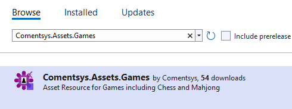
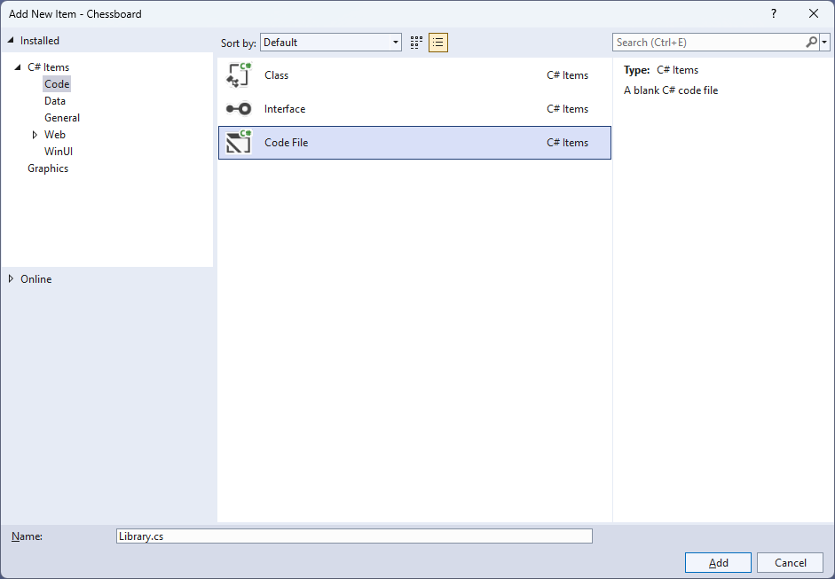
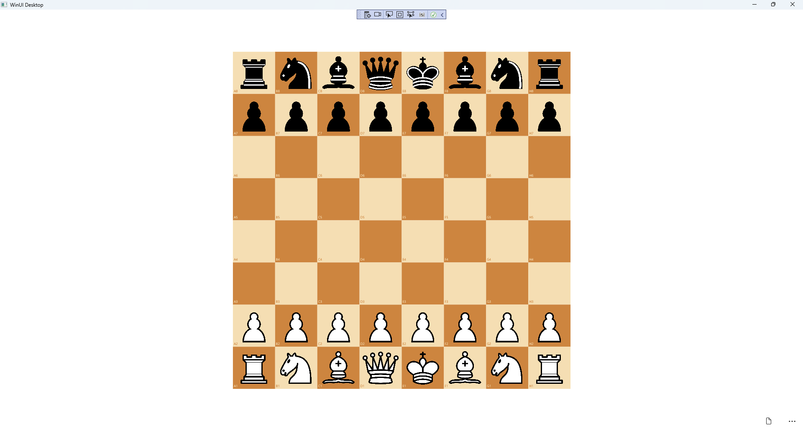

Chessboard
Learn creating a Chessboard game using Windows App SDK with this Tutorial
Chessboard shows how you can create a simple game of chess for two players using game assets and a toolkit from NuGet using the Windows App SDK.
Step 1
Follow Setup and Start on how to get Setup and Install what you need for Visual Studio 2022 and Windows App SDK.


Step 2
Then in Visual Studio within Solution Explorer for the Solution, right click on the Project shown below the Solution and then select Manage NuGet Packages...

Step 3
Then in the NuGet Package Manager from the Browse tab search for Comentsys.Toolkit.WindowsAppSdk and then select Comentsys.Toolkit.WindowsAppSdk by Comentsys as indicated and select Install

This will add the package for Comentsys.Toolkit.WindowsAppSdk to your Project. If you get the Preview Changes screen saying Visual Studio is about to make changes to this solution. Click OK to proceed with the changes listed below. You can read the message and then select OK to Install the package.
Step 4
Then while still in the NuGet Package Manager from the Browse tab search for Comentsys.Assets.Games and then select Comentsys.Assets.Games by Comentsys as indicated and select Install

This will add the package for Comentsys.Assets.Games to your Project. If you get the Preview Changes screen saying Visual Studio is about to make changes to this solution. Click OK to proceed with the changes listed below. You can read the message and then select OK to Install the package, then you can close the tab for Nuget: Chessboard by selecting the x next to it.
Step 5
Then in Visual Studio within Solution Explorer for the Solution, right click on the Project shown below the Solution and then select Add then New Item…

Step 6
Then in Add New Item from the C# Items list, select Code and then select Code File from the list next to this, then type in the name of Library.cs and then Click on Add.

Step 7
You will now be in the View for the Code of Library.cs then define a namespace allowing classes to be defined together,
usually each is separate but will be defined in Library.cs by typing the following Code:
using Comentsys.Assets.Games;
using Comentsys.Toolkit.Binding;
using Comentsys.Toolkit.WindowsAppSdk;
using Microsoft.UI.Xaml;
using Microsoft.UI.Xaml.Controls;
using Microsoft.UI.Xaml.Data;
using Microsoft.UI.Xaml.Markup;
using Microsoft.UI.Xaml.Media;
using System;
using System.Collections.Generic;
using System.Text;
using System.Threading.Tasks;
namespace Chessboard;
public enum ChessBackground
{
Light,
Dark
}
// Chess Coordinate Class & Chess Class
// Chess Square Class
// Chess Position Class
// Chess Board Class & Chess Square Style Selector Class
// Chess Piece to Image Source Converter Class
// Binder Class
public class Library
{
// Constants, Variables, Property & Template Method
// Tapped & New
}
The Class defined so far Library.cs has using for package of Comentsys.Toolkit.WindowsAppSdk and others including Comentsys.Assets.Games
along with a namespace which allows many classes to be defined together, usually a class is defined per file but to make things
easier each will be defined in Library.cs instead.
Step 8
Still in Library.cs for the namespace of Chessboard you will define a class for
ChessCoordinate for the locations needed for the chessboard and Chess to represent the pieces and the colours after
the Comment of // Chess Coordinate & Chess Class by typing the following:
public class ChessCoordinate
{
private const int size = 8;
private static readonly string[] ranks =
{ "8", "7", "6", "5", "4", "3", "2", "1" };
private static readonly string[] files =
{ "A", "B", "C", "D", "E", "F", "G", "H" };
public int Id { get; set; }
public int Row { get; set; }
public int Column { get; set; }
public ChessBackground Background { get; set; }
public string Notation { get; set; }
public ChessCoordinate(int id)
{
Id = id;
Row = Id / size;
Column = Id % size;
Background = (Row + Column) % 2 == 0 ?
ChessBackground.Light : ChessBackground.Dark;
Notation = $"{files[Column]}{ranks[Row]}";
}
}
public class Chess : ObservableBase
{
private ChessPieceSet _set;
private ChessPieceType _type;
public Chess(ChessPieceSet set, ChessPieceType type) =>
(_set, _type) = (set, type);
public ChessPieceSet Set
{
get => _set;
set => SetProperty(ref _set, value);
}
public ChessPieceType Type
{
get => _type;
set => SetProperty(ref _type, value);
}
}
Step 9
Still in the namespace of Chessboard in Library.cs after the Comment of // Chess Square Class type the following:
public class ChessSquare : ObservableBase
{
private int _id;
private Chess _piece;
private ChessCoordinate _coordinate;
private bool _isSelected;
public int Id
{
get => _id;
set => SetProperty(ref _id, value);
}
public Chess Piece
{
get => _piece;
set => SetProperty(ref _piece, value);
}
public ChessCoordinate Coordinate
{
get => _coordinate;
set => SetProperty(ref _coordinate, value);
}
public bool IsSelected
{
get => _isSelected;
set => SetProperty(ref _isSelected, value);
}
}
ChessSquare represents a chess piece on the chess board with Properties.
Step 10
While still in the namespace of Chessboard in Library.cs to represent a position and chess piece on the chessboard after
the Comment of // Chess Position Class type the following:
public class ChessPosition : List<Chess>
{
private const int size = 8;
public ChessPosition() : base(new Chess[size * size]) { }
public ChessPosition(string position) : this()
{
int i = 0;
var black = ChessPieceSet.Black;
var white = ChessPieceSet.White;
var pawn = ChessPieceType.Pawn;
var knight = ChessPieceType.Knight;
var bishop = ChessPieceType.Bishop;
var rook = ChessPieceType.Rook;
var queen = ChessPieceType.Queen;
var king = ChessPieceType.King;
foreach (char item in position)
{
switch (item)
{
case 'p': this[i++] = new Chess(black, pawn); break;
case 'n': this[i++] = new Chess(black, knight); break;
case 'b': this[i++] = new Chess(black, bishop); break;
case 'r': this[i++] = new Chess(black, rook); break;
case 'q': this[i++] = new Chess(black, queen); break;
case 'k': this[i++] = new Chess(black, king); break;
case 'P': this[i++] = new Chess(white, pawn); break;
case 'N': this[i++] = new Chess(white, knight); break;
case 'B': this[i++] = new Chess(white, bishop); break;
case 'R': this[i++] = new Chess(white, rook); break;
case 'Q': this[i++] = new Chess(white, queen); break;
case 'K': this[i++] = new Chess(white, king); break;
case '1':
case '2':
case '3':
case '4':
case '5':
case '6':
case '7':
case '8': i += int.Parse(item.ToString()); break;
case '/': if (i % size != 0)
throw new ArgumentException("Invalid FEN"); break;
default:
throw new ArgumentException($"Invalid FEN Character: '{item}'");
}
}
}
}
Step 11
While still in the namespace of Chessboard in Library.cs
after the Comment of // ChessBoard & Chess Square Style Selector type the following Classes:
public class ChessBoard
{
public ChessSquare[] ChessSquares { get; set; } = new ChessSquare[64];
public ChessBoard(string fen)
{
ChessPosition position = new(fen);
for (int i = 0; i < position.Count; i++)
{
ChessSquares[i] = new ChessSquare
{
Id = i,
Piece = position[i],
Coordinate = new ChessCoordinate(i)
};
}
}
}
public class ChessSquareStyleSelector : StyleSelector
{
private const int size = 8;
public Style Light { get; set; }
public Style Dark { get; set; }
protected override Style SelectStyleCore(
object item, DependencyObject container) =>
item is ChessSquare square
? (square.Id / size + square.Id % size) % 2 == 0 ? Light : Dark
: base.SelectStyleCore(item, container);
}
Chessboard will represent the chess board for the game itself with the positions and squares represented and then the
ChessSquareStyleSelector will be used to style the look of the chess board for the light and dark squares.
Step 12
While still in the namespace of Chessboard in Library.cs and after the
Comment of // Chess Piece to Image Source Converter Class type the following Class:
public class ChessPieceToImageSourceConverter : IValueConverter
{
private static readonly Dictionary<string, ImageSource> _sources = new();
public static async Task SetSourcesAsync()
{
if (_sources.Count == 0)
foreach(var set in Enum.GetValues<ChessPieceSet>())
foreach(var type in Enum.GetValues<ChessPieceType>())
_sources.Add($"{set}{type}",
await ChessPiece.Get(set, type).AsImageSourceAsync());
}
public object Convert(object value, Type targetType,
object parameter, string language) =>
value is Chess piece ? _sources[$"{piece.Set}{piece.Type}"] : null;
public object ConvertBack(object value, Type targetType,
object parameter, string language) =>
throw new NotImplementedException();
}
ChessPieceToImageSourceConverter will be used to control the displaying of the chess pieces on the chessboard. It has a Method to set the
image sources for each chess piece set and chess piece type, then this Class also implements an Interface of IValueConverter and will be used
to return the appropriate value for use with Data Binding.
Step 13
While still in the namespace of Chessboard in Library.cs and after the Comment of // Binder type the following Class:
public class Binder
{
public static readonly DependencyProperty GridColumnBindingPathProperty =
DependencyProperty.RegisterAttached("GridColumnBindingPath",
typeof(string), typeof(Binder),
new PropertyMetadata(null, GridBindingPathPropertyChanged));
public static readonly DependencyProperty GridRowBindingPathProperty =
DependencyProperty.RegisterAttached("GridRowBindingPath",
typeof(string), typeof(Binder),
new PropertyMetadata(null, GridBindingPathPropertyChanged));
public static string GetGridColumnBindingPath(DependencyObject obj) =>
(string)obj.GetValue(GridColumnBindingPathProperty);
public static void SetGridColumnBindingPath(
DependencyObject obj, string value) =>
obj.SetValue(GridColumnBindingPathProperty, value);
public static string GetGridRowBindingPath(DependencyObject obj) =>
(string)obj.GetValue(GridRowBindingPathProperty);
public static void SetGridRowBindingPath(
DependencyObject obj, string value) =>
obj.SetValue(GridRowBindingPathProperty, value);
private static void GridBindingPathPropertyChanged(
DependencyObject obj, DependencyPropertyChangedEventArgs e)
{
if (e.NewValue is string path)
{
DependencyProperty property = null;
if (e.Property == GridColumnBindingPathProperty)
property = Grid.ColumnProperty;
else if (e.Property == GridRowBindingPathProperty)
property = Grid.RowProperty;
BindingOperations.SetBinding(obj, property,
new Binding { Path = new PropertyPath(path) });
}
}
}
Binder is used to help with Data Binding when producing the layout based on the columns and rows of a
Grid and will help create labels for each of the squares on the chess board.
Step 14
While still in the namespace of Chessboard in Library.cs and the class of Library after
the Comment of // Constants, Variables, Property & Template Method
type the following Constants, Variables, Property and Method:
private const int size = 8;
private const string start = "rnbqkbnr/pppppppp/8/8/8/8/PPPPPPPP/RNBQKBNR";
private ChessSquare _square;
public ChessBoard Board { get; set; } = new ChessBoard(start);
private static ItemsPanelTemplate Template()
{
StringBuilder rows = new();
StringBuilder columns = new();
for (int i = 0; i < size; i++)
{
rows.Append("<RowDefinition Height=\"*\"/>");
columns.Append("<ColumnDefinition Width=\"*\"/>");
}
return (ItemsPanelTemplate)
XamlReader.Load($@"<ItemsPanelTemplate
xmlns='http://schemas.microsoft.com/winfx/2006/xaml/presentation'
xmlns:x='http://schemas.microsoft.com/winfx/2006/xaml'>
<Grid>
<Grid.RowDefinitions>{rows}</Grid.RowDefinitions>
<Grid.ColumnDefinitions>{columns}</Grid.ColumnDefinitions>
</Grid>
</ItemsPanelTemplate>");
}
Constants are values that are used in the game that will not change and Variables are used to store various
values and controls needed for the game. Template is used to create the correct layout for the game to produce the rows and columns
for the chess board as an ItemsPanelTemplate.
Step 15
While still in the namespace of Chessboard in Library.cs and the class of Library after
the Comment of // Tapped & New type the following Methods:
public void Tapped(ItemsControl display, ContentPresenter container)
{
ChessSquare square = (ChessSquare)display.ItemFromContainer(container);
if (_square == null && square.Piece != null)
{
square.IsSelected = true;
_square = square;
}
else if (square == _square)
{
square.IsSelected = false;
_square = null;
}
else if (_square?.Piece != null && _square.Piece.Set != square?.Piece?.Set)
{
square.Piece = _square.Piece;
_square.IsSelected = false;
_square.Piece = null;
_square = null;
}
}
public async void New(ItemsControl display)
{
await ChessPieceToImageSourceConverter.SetSourcesAsync();
display.ItemsSource = Board.ChessSquares;
display.ItemsPanel = Template();
Board = new ChessBoard(start);
}
Tapped respond to events from the displayed chess board and allow pieces to be moved although this is a simple movement system which will replace any
piece on the board with another piece it could be expanded to implement the actual rules of chess if needed and New will setup and start a new game and assign
the image source and set things needed for the look-and-feel for the game.
Step 16
Step 17
In the XAML for MainWindow.xaml there will be some XAML for a StackPanel, this should be Removed:
<StackPanel Orientation="Horizontal"
HorizontalAlignment="Center" VerticalAlignment="Center">
<Button x:Name="myButton" Click="myButton_Click">Click Me</Button>
</StackPanel>
Step 18
While still in the XAML for MainWindow.xaml below <Window>, type in the following XAML:
xmlns:ui="using:Comentsys.Toolkit.WindowsAppSdk"
The XAML for <Window> should then look as follows:
<Window
xmlns:ui="using:Comentsys.Toolkit.WindowsAppSdk"
x:Class="Chessboard.MainWindow"
xmlns="http://schemas.microsoft.com/winfx/2006/xaml/presentation"
xmlns:x="http://schemas.microsoft.com/winfx/2006/xaml"
xmlns:local="using:Chessboard"
xmlns:d="http://schemas.microsoft.com/expression/blend/2008"
xmlns:mc="http://schemas.openxmlformats.org/markup-compatibility/2006"
mc:Ignorable="d">
Step 19
While still in the XAML for MainWindow.xaml above </Window>, type in the following XAML:
<Grid>
<Grid.Resources>
<Style TargetType="ContentPresenter" x:Key="SquareStyle">
<Setter Property="local:Binder.GridRowBindingPath"
Value="Coordinate.Row"/>
<Setter Property="local:Binder.GridColumnBindingPath"
Value="Coordinate.Column"/>
</Style>
<Style TargetType="ContentPresenter" BasedOn="{StaticResource SquareStyle}"
x:Key="DarkStyle">
<Setter Property="Background" Value="Peru"/>
<Setter Property="Foreground" Value="Wheat"/>
</Style>
<Style TargetType="ContentPresenter" BasedOn="{StaticResource SquareStyle}"
x:Key="LightStyle">
<Setter Property="Background" Value="Wheat"/>
<Setter Property="Foreground" Value="Peru"/>
</Style>
<local:ChessSquareStyleSelector x:Key="ChessSquareStyleSelector"
Dark="{StaticResource DarkStyle}" Light="{StaticResource LightStyle}"/>
<local:ChessPieceToImageSourceConverter
x:Key="ChessPieceToImageSourceConverter"/>
<ui:BoolToVisibilityConverter x:Key="BoolToVisibilityConverter"/>
<DataTemplate x:Key="ChessTemplate" x:DataType="local:ChessSquare">
<Grid IsHitTestVisible="False">
<Grid.RowDefinitions>
<RowDefinition Height="*"/>
<RowDefinition Height="Auto"/>
</Grid.RowDefinitions>
<Ellipse Grid.Row="0" Grid.RowSpan="2" Fill="Gray" Opacity="0.75"
HorizontalAlignment="Stretch" VerticalAlignment="Stretch"
Visibility="{Binding IsSelected, Mode=OneWay,
Converter={StaticResource BoolToVisibilityConverter}}">
</Ellipse>
<Viewbox Grid.Row="0" Grid.RowSpan="2">
<Image Height="42" Width="42" Source="{Binding}"
DataContext="{Binding Piece, Mode=OneWay,
Converter={StaticResource ChessPieceToImageSourceConverter}}"/>
</Viewbox>
<TextBlock Grid.Row="1" Margin="1" FontSize="4"
Text="{Binding Coordinate.Notation}"/>
</Grid>
</DataTemplate>
</Grid.Resources>
<!-- Viewbox & Command Bar -->
</Grid>
This XAML contains a
Step 20
While still in the XAML for MainWindow.xaml below the Comment of
<!-- Viewbox & Command Bar -->, type in the following XAML:
<Viewbox>
<ItemsControl Name="Display" Margin="50" Width="400" Height="400"
ItemContainerStyleSelector="{StaticResource ChessSquareStyleSelector}"
ItemTemplate="{StaticResource ChessTemplate}"
Loaded="New" Tapped="Tapped"/>
</Viewbox>
<CommandBar VerticalAlignment="Bottom">
<AppBarButton Icon="Page2" Label="New" Click="New"/>
</CommandBar>
This XAML contains a Viewbox which will Scale an ItemsControl and it has a
Loaded event handler for New which is also shared by the AppBarButton and for Tapped.
Step 21
Step 22
In the Code for MainWindow.xaml.cs there be a Method of myButton_Click(...) this should be Removed by removing the following:
private void myButton_Click(object sender, RoutedEventArgs e)
{
myButton.Content = "Clicked";
}
Step 23
Once myButton_Click(...) has been removed, within the Constructor of public MainWindow() { ... } and below the line of this.InitializeComponent(); type in the following Code:
private readonly Library _library = new();
private void Tapped(object sender, TappedRoutedEventArgs e) =>
_library.Tapped(sender as ItemsControl, e.OriginalSource as ContentPresenter);
private void New(object sender, RoutedEventArgs e) =>
_library.New(Display);
Here an Instance of Library is created then below this is the Method of Tapped and New
that will be used with Event Handler from the XAML, this Method
uses Arrow Syntax with the => for an Expression Body which is useful when a Method only has one line.
Step 24
Step 25
Once running you can tap on the appropriate

Step 26